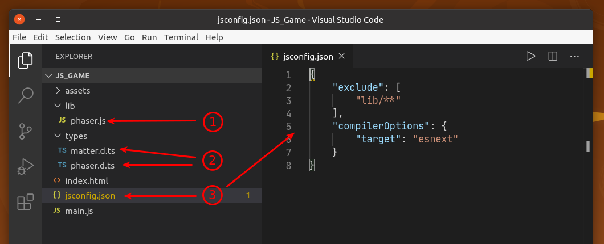

Visual Studio Code compatibility
The Visual Studio Code editor is prefect for writing the code of the Phaser Editor 2D games. First, t is extremely popular and powerful. Second, cause the projects created by Phaser Editor 2D contains the files needed by Visual Studio Code to provide a good coding experience with Phaser.
Project structure
The JavaScript project templates include these files:
The file
lib/phaser.js. It is the Phaser runtime.The Phaser type definition files:
types/phaser.d.tsandtypes/matter.d.ts. Those files are provided by Phaser and are used by the Visual Studio Code to “understand” the Phaser API.The project configuration file:
jsconfig.json.
If it is a TypeScript project, then it includes the tsconfig.json file, instead of the
jsconfig.jsonfile.
Code Server
If you are using a remote instance of Phaser Editor 2D, you can try Code Server. It allows to run VS Code in the same Phaser Editor 2D server and edit the game code in your local browser.
Also, you can use cloud services like GitHub Code Spaces or Gitpod. In both cases you can install Phaser Editor 2D Core as a project dependency and run it alongside with VS Code.